STA entities create, edit or delete tool
These tools allow you to create, edit, or delete a record in an STA service.
Depending on the node that is linked, different options will be available. Each option is explained in its corresponding section.
CreateTo create a new record in an entity, you must link the singular entity tool to the STA service or to a related STA entity (see STA schema). You must link all required entities to this node. Each entity can have only one record. The system will automatically add these IDs to the create request. Mandatory linked entities will be marked with an asterisk.
Double-clicking the node will display a dialog box showing the linked entities with their IDs and a set of possible properties to fill out. Required properties will also be marked with an asterisk.
You can create a new record only if you are logged in.
EditTo edit a record, the entity you want to modify must have only one record. Link the singular entity tool of this entity to it. Double-clicking this tool will display a dialog box with the existing information. This dialog is the same one used for deleting records. To modify the data, make your changes and click "Update". You must be logged in to edit an entity.
DeleteTo delete a record, the entity you want to remove must have only one record. Link the singular entity tool of this entity to it. Double-clicking this tool will display a dialog box with the existing information (the same dialog used for editing). To delete the record, click the "Delete" button. You must be logged in to delete an entity.
 FeatureOfInterest
FeatureOfInterest
Setting Up the Node:

How to Use the Node:
The FeatureOfInterest tool allows you to create, edit, and delete FeatureOfInterest entities in the connected STA service.
To perform any of these actions, you must be logged in to TAPIS.
A FeatureOfInterest represents the real-world entity, object, or phenomenon that is the subject of an Observation. It identifies the entity, object, or phenomenon whose properties are being observed.
A FeatureOfInterest is directly related to Observations. Each Observation refers to exactly one FeatureOfInterest, while a FeatureOfInterest can be associated with zero or more Observations.
Related entities- Observation (optional): Represents an observation made of the FeatureOfInterest. A FeatureOfInterest may be associated with one or more Observations, but it is not necessary to have an Observation when creating a FeatureOfInterest.
- name (CharacterString): A property that provides a label for the FeatureOfInterest entity, commonly a descriptive name. This field is mandatory.
- description (CharacterString): A description of the corresponding FeatureOfInterest entity. This field is mandatory.
- encodingType (ValueCode): Specifies the encoding type of the feature property. This field is mandatory.
- feature (Any): Describes the FeatureOfInterest. The content and structure of this property depend on the value of encodingType. This field is mandatory.
- properties (JSON Object [0..1]): A JSON object containing additional user-defined information about the FeatureOfInterest. This field is optional.
Create
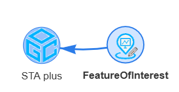
To create a new FeatureOfInterest entity, the corresponding tool only needs to be linked to the STA service, as it does not depend on any other entity. The name, description, encodingType, and feature attributes of the FeatureOfInterest are mandatory, while the properties attribute is optional.
To open the dialog, double-click with the left mouse button. The dialog contains the attributes of the FeatureOfInterest. The name, description, encodingType, and feature fields are mandatory, while the Properties field is optional.
The ID of the FeatureOfInterest is generated automatically by the STA service when the entity is created. If a required attribute is not provided, the message You need to fill in this field will be displayed.
The value entered in encodingType must identify the encoding used by the feature property. For example, a FeatureOfInterest represented as a geographic feature can use an appropriate GeoJSON encoding type and provide the corresponding GeoJSON object in the feature field.

This is the data for the example. Once you have finished, click Create.

If the entity has been created successfully, a text similar to this will appear on the right. You can view the entity you have just created by clicking on the text following Available at:.
If the entity you are trying to create already exists, it will not be created again. However, the displayed text will be the same.

This is the result that opens in a new page when you click the link following Available at:.

If you want to see how the STA service has been updated with the new information, link the corresponding entity tool in its plural form (FeaturesOfInterest).
If the service contains a large number of FeatureOfInterest entities, use a tool to select the desired FeatureOfInterest. In this case, the Select Resource tool is used. Use the ID provided in the information under Available at:.

Here is the result showing the loaded FeatureOfInterest data.

Edit
To edit a FeatureOfInterest, you must first link a tool that allows you to select only that specific record. You can use Select Resource , Select Row , or Filter Rows .
Continuing with the previous example, right-click and add the FeatureOfInterest tool.

By double-clicking with the left mouse button, the dialog for this FeatureOfInterest will open, displaying all its information.
All fields are editable except for the ID field.
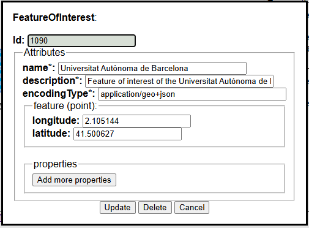
In this example, we will add two properties to the existing FeatureOfInterest. To add properties, simply click Add more properties to display the fields where you can enter them.
Properties can also be deleted by clicking the trash icon.
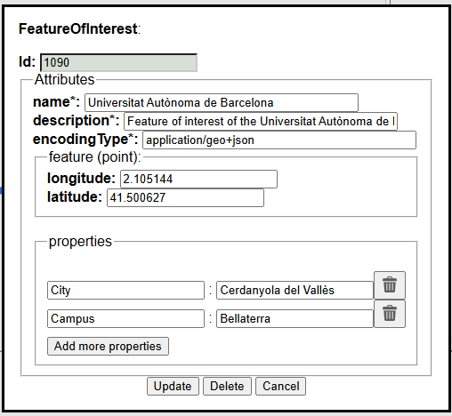
Once this is done, click the Update button to automatically send the request to the STA service. If the operation is successful, a message similar to the following will appear on the right-hand side.
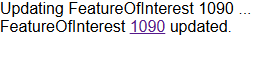
Clicking on the FeatureOfInterest ID will open a new browser tab displaying the updated entity.
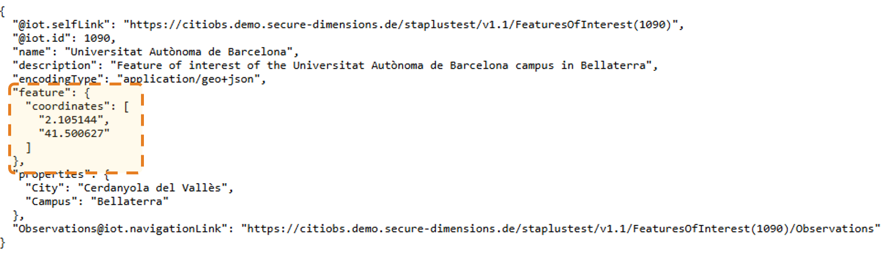
Delete
To delete a FeatureOfInterest from the STA service, as in the case of editing a FeatureOfInterest, you must first select it using a tool that allows you to select the corresponding record.
You can use Select Resource , Select Row , or Filter Rows .
By double-clicking with the left mouse button, the dialog for this FeatureOfInterest will open, displaying all its information.
The same dialog as the one used for editing the FeatureOfInterest will appear. To delete the FeatureOfInterest, simply click the Delete button.
Important: the FeatureOfInterest is the entity being observed by an Observation. Deleting a FeatureOfInterest that is referenced by existing Observations may therefore be subject to the constraints and behaviour implemented by the connected STA service.
Recipes where this tool is used:
 Location
Location
Setting Up the Node:

How to Use the Node:
The Location tool allows you to create, edit, and delete locations in the connected STA service.
To perform any of these actions, you must be logged in to TAPIS. When you create a location, it is automatically associated with the Party associated with the account you used to log in to TAPIS.
You can only edit or delete entities associated with your Party.
Attributes of the entity
- name (CharacterString): A property provides a label for the Location entity, commonly a descriptive name.
- description (CharacterString): A property provides a description of the Location entity.
- encodingType (CharacterString): The encoding type of the metadata describing the Location.
- location (Any): The location data, encoded according to the specified encoding type.
- properties (JSON Object [0..1]): A JSON object containing additional information about the Location.
Create
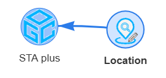
To create a new Location entity, the corresponding tool only needs to be linked to the STA service, as it does not depend on any other entity. To open the dialog, double-click with the left mouse button. The dialog contains all the attributes of the location. The Properties field is not mandatory. You can add as many properties as you want, one by one.

This is the data for the example. Once you have finished, click Create.

If the entity has been created successfully, a text similar to this will appear on the right. You can view the entity you have just created by clicking on the text following Available at:
If the entity you are trying to create already exists, it will not be created again. However, the displayed text will be the same.

This is the result that opens in a new page when you click the link following Available at:.

If you want to see how the STA service has been updated with the new information, link the corresponding entity tool in its plural form (Locations). If the service contains a large number of locations, use a tool to select the desired location. In this case, the Select Resource tool is used. Use the ID provided in the information under Available at:.

Here is the result showing the loaded data.

Edit
To edit a record associated with your Party, you must first link a tool that allows you to select only that specific record (you can use Select Resource, Select Row, or Filter Rows). Continuing with the previous example, right-click and add the Location tool.

By double-clicking with the left mouse button, the dialog for this location will open, displaying all its information. All fields are editable except for the ID field.
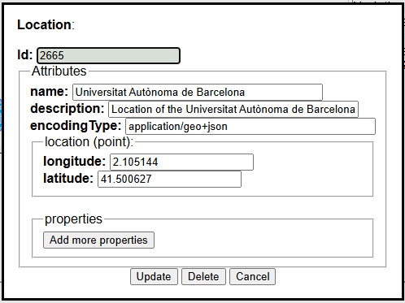
In this example, we will add two properties to the existing location. To add properties, simply click Add more properties to display the fields where you can enter them. Properties can also be deleted by clicking the trash icon.
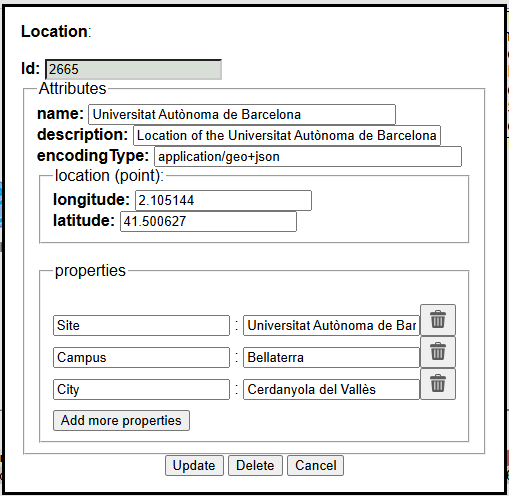
Once this is done, click the Update button to automatically send the request to the STA service . If the operation is successful, a message similar to the following will appear on the right-hand side.
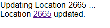
Clicking on the location ID will open a new browser tab displaying the updated entity.
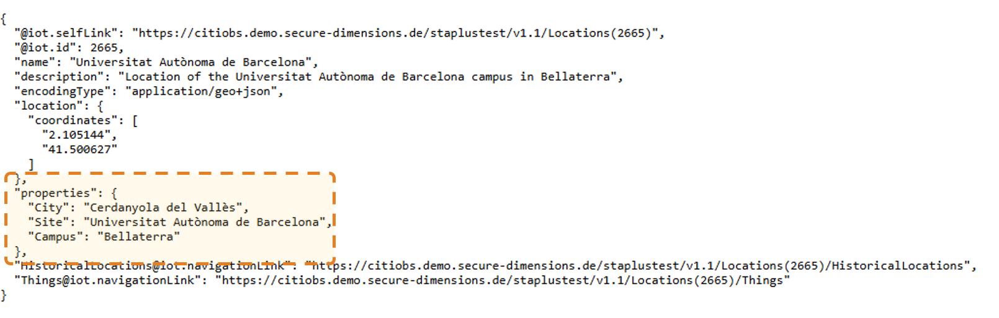
Delete
To delete a location from the STA service, as in the case of editing a location, you must first select it using a tool that allows you to select the corresponding record (you can use Select Resource, Select Row, or Filter Rows).
By double-clicking with the left mouse button, the dialog for this location will open, displaying all its information. The same dialog as the one used for editing the location will appear. To delete the location, simply click the Delete button.
Recipes where this tool is used:
 ObservedProperty
ObservedProperty
Setting Up the Node:

How to Use the Node:
The ObservedProperty tool allows you to create, edit, and delete observed properties in the connected STA service.
To perform any of these actions, you must be logged in to TAPIS. When you create an observed property, it is automatically associated with the Party associated with the account you used to log in to TAPIS.
You can only edit or delete entities associated with your Party.
Attributes of the entity
- name (CharacterString): A property provides a label for the ObservedProperty entity, commonly a descriptive name.
- description (CharacterString): A property provides a description of the ObservedProperty entity.
- encodingType (CharacterString): The encoding type of the metadata describing the ObservedProperty.
- metadata (Any): The metadata describing the ObservedProperty, encoded according to the specified encoding type.
- properties (JSON Object [0..1]): A JSON object containing additional information about the ObservedProperty.
Create
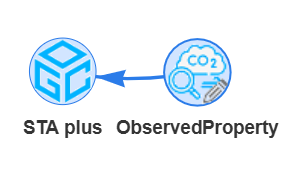
To create a new ObservedProperty entity, the corresponding tool only needs to be linked to the STA service, as it does not depend on any other entity. To open the dialog, double-click with the left mouse button. The dialog contains all the attributes of the observed property. The Properties field is not mandatory. You can add as many properties as you want, one by one.

This is the data for the example. Once you have finished, click Create.

If the entity has been created successfully, a text similar to this will appear on the right. You can view the entity you have just created by clicking on the text following Available at:
If the entity you are trying to create already exists, it will not be created again. However, the displayed text will be the same.

This is the result that opens in a new page when you click the link following Available at:.

If you want to see how the STA service has been updated with the new information, link the corresponding entity tool in its plural form (ObservedProperties). If the service contains a large number of observed properties, use a tool to select the desired observed property. In this case, the Select Resource tool is used. Use the ID provided in the information under Available at:.

Here is the result showing the loaded data.
Edit
To edit a record associated with your Party, you must first link a tool that allows you to select only that specific record (you can use Select Resource, Select Row, or Filter Rows). Continuing with the previous example, right-click and add the ObservedProperty tool.

By double-clicking with the left mouse button, the dialog for this observed property will open, displaying all its information. All fields are editable except for the ID field.
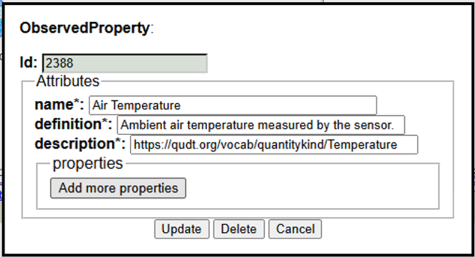
In this example, we will add two properties to the existing observed property. To add properties, simply click Add more properties to display the fields where you can enter them. Properties can also be deleted by clicking the trash icon.
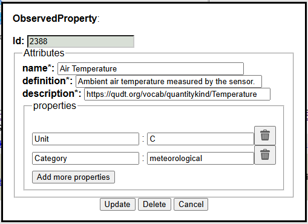
Once this is done, click the Update button to automatically send the request to the STA service . If the operation is successful, a message similar to the following will appear on the right-hand side.
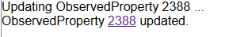
Clicking on the observed property ID will open a new browser tab displaying the updated entity.
Delete
To delete an observed property from the STA service, as in the case of editing an observed property, you must first select it using a tool that allows you to select the corresponding record (you can use Select Resource, Select Row, or Filter Rows).
By double-clicking with the left mouse button, the dialog for this observed property will open, displaying all its information. The same dialog as the one used for editing the observed property will appear. To delete the observed property, simply click the Delete button.
Recipes where this tool is used:
 Party
Party
Setting Up the Node:

How to Use the Node:
The Party tool allows you to create a new Party entity in the connected STA service. To create a Party, the Party tool only needs to be linked to the STA service, as it does not depend on any other entity. As with the other tools, you must also be logged in to TAPIS.
In this case, you can only create an entity; editing or deleting it is not supported.
Attributes of the entity
- role (CharacterString): The role of the Party. The possible values are individual or institutional.
- description (CharacterString [0..1]): A short description of the Party.
- displayName (CharacterString [0..1]): A name commonly used to address or refer to the Party.
- authId (CharacterString [0..1]): A system-wide unique identifier used to uniquely identify the Party, such as an identifier obtained from an authentication system.
Create
To create a new Party, you must be logged in to TAPIS. When you log in, the system generates a code that is used as the authorId associated with that login.
To open the dialog, double-click with the left mouse button. Two fields will be filled in automatically: the authorId, which is the code generated during the TAPIS login and cannot be modified, and the role, which can be modified but is mandatory. “Complete the remaining fields

This is the data for the example. Once you have finished, click Create.

If the entity has been created successfully, a text similar to this will appear on the right. You can view the entity you have just created by clicking on the text following Available at:
If the entity you are trying to create already exists, it will not be created again. However, the displayed text will be the same.

This is the result that opens in a new page when you click the link following Available at:.

If you want to see how the STA service has been updated with the new information, link the corresponding entity tool in its plural form (Parties).

Here is the result showing the loaded data.

Edit
Not suported
Delete
Not suported
Recipes where this tool is used:
 Sensor
Sensor
Setting Up the Node:

How to Use the Node:
The Sensor tool allows you to create, edit, and delete sensors in the connected STA service.
To perform any of these actions, you must be logged in to TAPIS. When you create a sensor, it is automatically associated with the Party associated with the account you used to log in to TAPIS.
You can only edit or delete entities associated with your Party.
Attributes of the entity
- name (CharacterString): A property provides a label for the Sensor entity, commonly a descriptive name.
- description (CharacterString): A property provides a description of the Sensor entity.
- encodingType (CharacterString): The encoding type of the metadata describing the Sensor.
- metadata (Any): The metadata describing the Sensor, encoded according to the specified encoding type.
- properties (JSON Object [0..1]): A JSON object containing additional information about the Sensor.
Create

To create a new Sensor entity, the corresponding tool only needs to be linked to the STA service, as it does not depend on any other entity. To open the dialog, double-click with the left mouse button. The dialog contains all the attributes of the sensor. The Properties field is not mandatory. You can add as many properties as you want, one by one.

This is the data for the example. Once you have finished, click Create.

If the entity has been created successfully, a text similar to this will appear on the right. You can view the entity you have just created by clicking on the text following Available at:
If the entity you are trying to create already exists, it will not be created again. However, the displayed text will be the same.

This is the result that opens in a new page when you click the link following Available at:.

If you want to see how the STA service has been updated with the new information, link the corresponding entity tool in its plural form (Sensors). If the service contains a large number of sensors, use a tool to select the desired sensor. In this case, the Select Resource tool is used. Use the ID provided in the information under Available at:.

Here is the result showing the loaded data.

Edit
To edit a record associated with your Party, you must first link a tool that allows you to select only that specific record (you can use Select Resource, Select Row, or Filter Rows). Continuing with the previous example, right-click and add the Sensor tool.

By double-clicking with the left mouse button, the dialog for this sensor will open, displaying all its information. All fields are editable except for the ID field.

In this example, we will add two properties to the existing sensor. To add properties, simply click Add more properties to display the fields where you can enter them. Properties can also be deleted by clicking the trash icon.

Once this is done, click the Update button to automatically send the request to the STA service . If the operation is successful, a message similar to the following will appear on the right-hand side.

Clicking on the sensor ID will open a new browser tab displaying the updated entity.

Delete
To delete a sensor from the STA service, as in the case of edit a sensor, you must first select it using a tool that allows you to select the corresponding record (you can use Select Resource, Select Row, or Filter Rows).
By double-clicking with the left mouse button, the dialog for this sensor will open, displaying all its information. The same dialog as the one used for editing the sensor will appear. To delete the sensor, simply click the Delete button.
Recipes where this tool is used:
 Thing
Thing
Setting Up the Node:

How to Use the Node:
The Thing tool allows you to create, edit, and delete Things in the connected STA service.
To perform any of these actions, you must be logged in to TAPIS. When you create a Thing, it is automatically associated with the Party associated with the account you used to log in to TAPIS.
You can only edit or delete entities associated with your Party.
Related entities- Party (mandatory): The Party associated with the Thing. A Party must be linked to create the Thing.
- Location (optional): Specifies the location of the Thing. A Thing may be associated with one or more Locations.
- HistoricalLocation (optional): Stores information about the current and previous locations of the Thing over time.
- Datastream (optional): Represents a data stream produced by the Thing. A Thing may be associated with one or more Datastreams.
- name (CharacterString): A property that provides a label for the Thing entity, commonly a descriptive name. This field is mandatory.
- description (CharacterString): A short description of the corresponding Thing entity. This field is mandatory.
- properties (JSON Object [0..1]): A JSON object containing additional user-defined information about the Thing. This field is optional.
Create
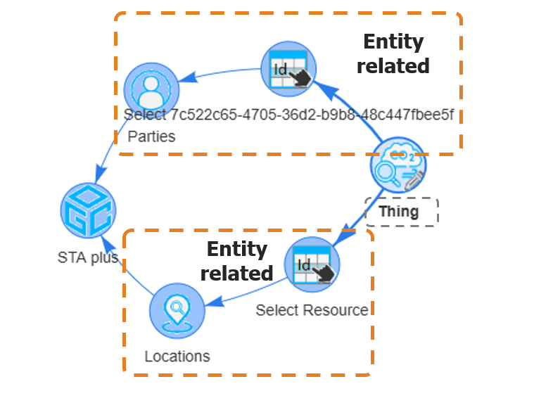
To create a new Thing entity, some related entities are mandatory, while others are optional. See the list described above for the required and optional related entities.
To open the dialog, double-click with the left mouse button. The dialog contains the attributes of the Thing. The name and description fields are mandatory, while the Properties field is optional.
The ID of the linked entities will be loaded automatically in the dialog that opens. If a required entity is not linked, the message You need to link one will be displayed.
The Party linked to the Thing must be the same as the Party automatically assigned by TAPIS based on the account used to log in.

This is the data for the example. Once you have finished, click Create.

If the entity has been created successfully, a text similar to this will appear on the right. You can view the entity you have just created by clicking on the text following Available at:
If the entity you are trying to create already exists, it will not be created again. However, the displayed text will be the same.

This is the result that opens in a new page when you click the link following Available at:.

If you want to see how the STA service has been updated with the new information, link the corresponding entity tool in its plural form (Things). If the service contains a large number of Things, use a tool to select the desired Thing. In this case, the Select Resource tool is used. Use the ID provided in the information under Available at:.

Here is the result showing the loaded data.

Edit
To edit a record associated with your Party, you must first link a tool that allows you to select only that specific record (you can use Select Resource, Select Row, or Filter Rows). Continuing with the previous example, right-click and add the Thing tool.

By double-clicking with the left mouse button, the dialog for this Thing will open, displaying all its information. All fields are editable except for the ID field.
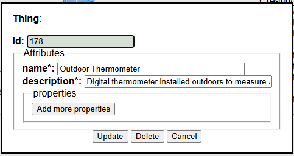
In this example, we will add two properties to the existing Thing. To add properties, simply click Add more properties to display the fields where you can enter them. Properties can also be deleted by clicking the trash icon.
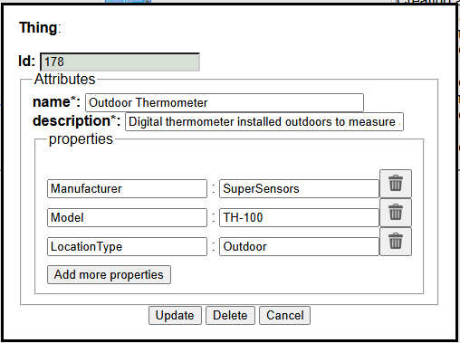
Once this is done, click the Update button to automatically send the request to the STA service. If the operation is successful, a message similar to the following will appear on the right-hand side.
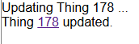
Clicking on the Thing ID will open a new browser tab displaying the updated entity.
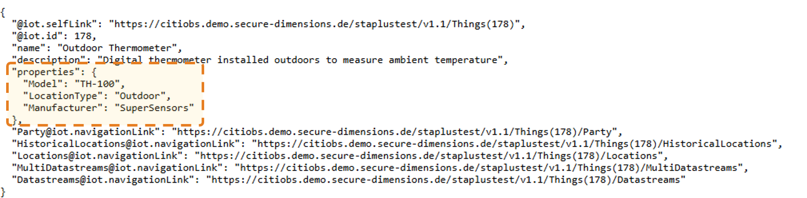
Delete
To delete a Thing from the STA service, as in the case of editing a Thing, you must first select it using a tool that allows you to select the corresponding record (you can use Select Resource, Select Row, or Filter Rows).
By double-clicking with the left mouse button, the dialog for this Thing will open, displaying all its information. The same dialog as the one used for editing the Thing will appear. To delete the Thing, simply click the Delete button.
Recipes where this tool is used: